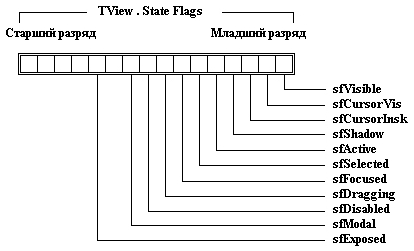

|
|
|
|
Поле State
Шестнадцатиразрядное поле State хранит различные признаки, определяющие поведение или состояние видимого элемента. На рис. 17.11 показаны разряды поля State.

Puc.17.1l. Разряды поля State
sjVisible
Разрешает визуализировать видимый элемент, если визуализируется его владелец. По умолчанию этот флаг установлен.
sfCursorVis
Разрешает показать курсор внутри видимого элемента. По умолчанию этот флаг очищен.
sfCursorlns
Если этот флаг установлен, курсор будет занимать всю высоту строки, если сброшен, курсор имеет стандартную высоту (две нижних строки развертки).
sfShadow
Если флаг установлен, видимый элемент имеет «тень».
sfActive
Указывает, является ли данный элемент активным окном или подэлементом активного окна.
sfSelected
Указывает, является ли данный элемент текущим (выбранным) видимым элементом. Каждый объект TGroup имеет поле Current, содержащее указатель на текущий выбранный подэлемент или NIL, если не выбран ни один подэлемент. В каждый момент времени в группе может быть выбран только один подэлемент.
sfFocused
Указывает, принадлежит ли данный элемент цепочке активности видимых элементов, т.е. выбран ли он и все его владельцы в данный момент времени.
sJDragging
Разрешает изменять размеры элемента.
sfDisable
Флаг запрещает выбирать данный видимый элемент. Если флаг сброшен, элемент можно выбрать мышью или клавишей Tab.
sfModal
Если флаг установлен, данный элемент - это модальный элемент. В программе Turbo Vision всегда имеется один и только один модальный элемент. Обычно это экземпляр TApplication или TDialog. Модальный видимый элемент активизируется вызовом метода ExecView и образует корень активного дерева событий: он перехватывает события и управляет ими до тех пор, пока не будет вызван его метод EndModal (см.гл.18). Модальный элемент может передавать события своим подэлементам и получать события от них, но он никогда не передает события своему владельцу (события локализуются в модальном элементе).
sfExposed
Указывает, виден ли элемент или любая его часть в данный момент времени (элемент может закрываться другими видимыми элементами). Если флаг установлен, метод Exposed данного элемента возвращает значение True.
|
|
|
|